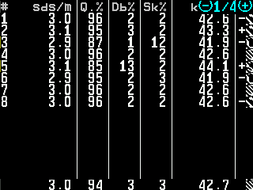

The Seeding table screen
The readings of every seed line as figures, one row per line — which tables your machine has, what each column and colour means, and how to zero the readings.
The Seeding table answers what the diagram on the home screen cannot: which line exactly, and by how much. Open it with “HOME” from the home screen; the next “HOME” goes on to the Statistics screen, “BACK” returns to the home screen.
The figures belong to the working session: they count from switch-on and are lost at switch-off. The field statistics are kept apart — see The Statistics screen.
What the table shows

- Row number — the seed line, in the order of the rows of the machine.
- sds/m — the rate measured now, in seeds per metre. ----- — the line is watched but not sowing.
- Q.% — quality: the share of seeds placed singly, as intended.
- Db% — doubles: two seeds where one was intended.
- Sk% — skips: a gap where a seed was intended.
- Page indicator — this table and the number of tables, between the signs of “MINUS” and “PLUS”, the buttons that change the table. Absent if there is only one table.
- Population of the line, in thousands of seeds per hectare.
- Averages over all lines watched. With two groups of sensors, two such lines, A and B.
Columns 3 to 7 belong to the last completed recalculation interval — the stretch set by “Recalculation,m” (or “Recalculation,sec” without a speed sensor), shown at the bottom right. Only column 2 is a live reading. After the machine stops, the figures of the last interval stay on the screen to be read at leisure. A further column, %, gives the deviation of each line from the target, with its sign; positive means more seeds and a closer spacing.
Which tables your machine has
| Table | Shown when |
|---|---|
| Rate per area (population, ks/Ha), Rate per distance (seeds per metre) | Seed in the “Precise” mode. |
| Seed counters | Always. |
| Dry fertilizer | There are fertilizer sensors and their mode is not “Precise”. |
| Liquid fertilizer | There are liquid fertilizer sensors. |
A planter with seed in “Precise” and dry-fertilizer sensors has four tables. “PLUS” goes to the next one, “MINUS” to the previous one; the page indicator at the top right shows which one you are on.



If seed and fertilizer are both in “Precise”, the fertilizer lines appear in the seed tables as group B, in light yellow type.

On the Seed counters table the bar runs between the permitted deviation “Rate error,%” either side of the target — not a fixed scale. In the “Flow” and “Hybrid” modes the scale is fixed at −50 % to +50 %. The left column then shows seeds per second instead of seeds per metre.
Markers and colours
| In the rate column | Meaning |
|---|---|
| ----- | Watched, not sowing now. |
| ! ---, whole row grey | Taken out of control. |
| X ---, whole row dark red | No connection to this sensor. |
| ? ---, whole row dark red | A sensor of the wrong type answers here. |
While sowing, a cell turns yellow when it reaches more than half the permitted deviation and red when it exceeds it. The limits are “Rate error,%”, “Doubles error,%” and “Skips error,%” of the seed sensors; with the doubles or skips check off, “Scale S&D,%” is used. The row number turns yellow or red with its worst cell, so the line that stands out is found at a glance.
Buttons
| Button | What it does |
|---|---|
| “PLUS” / “MINUS” | Next / previous table. |
| “DOWN” / “UP” | Scroll one row. One touch is one row. |
| “MENU” | Asks “Zero readings?” — Zero the readings. |
| “HOME” | Statistics. |
| “BACK” | Home screen. |
The table itself does not react to touch.
Fertilizer tables and tramline rows

The Dry fertilizer table is built like the Seed counters table, with fert/m in the “Hybrid” mode or fert/s in “Flow”; the piece count is shown only with “Count seeds always” on. The Liquid fertilizer table shows per line the flow and the litres applied, with L/Ha or L/min by “Mode of liq.fert.”, and has no deviation bar.
A line shut off for a tramline shows only its number and flow; the other columns are dashed. Here yellow and red warn that more seed falls into the tramline than “Toler.sowing to tramline,%” allows.

Something your machine does that this page does not answer? Write to support@agriwelt.com — an engineer answers.